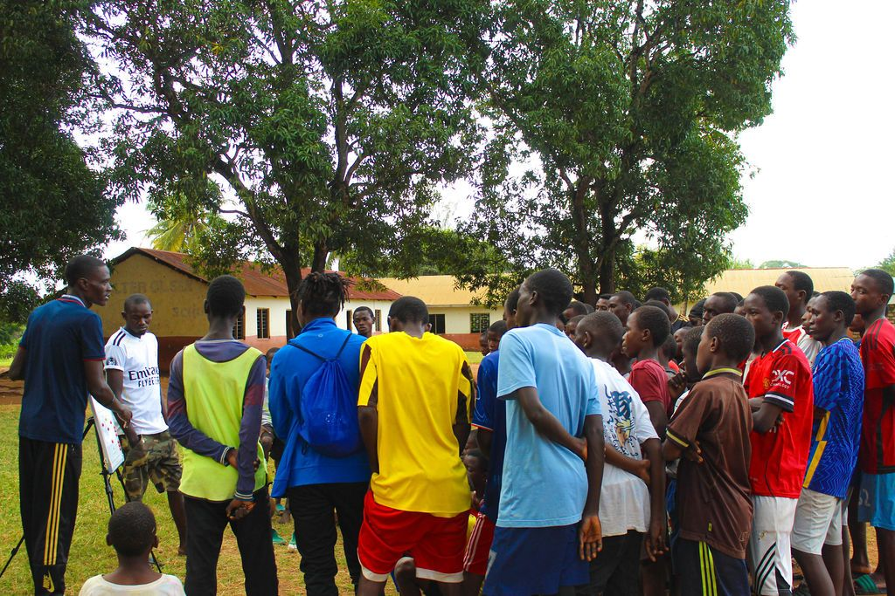
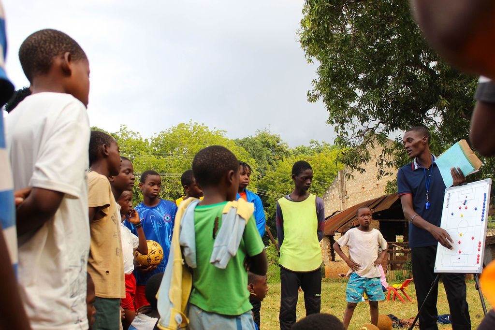
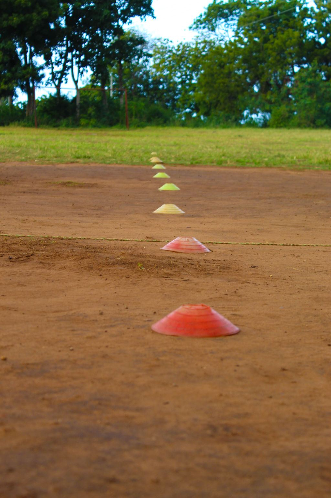
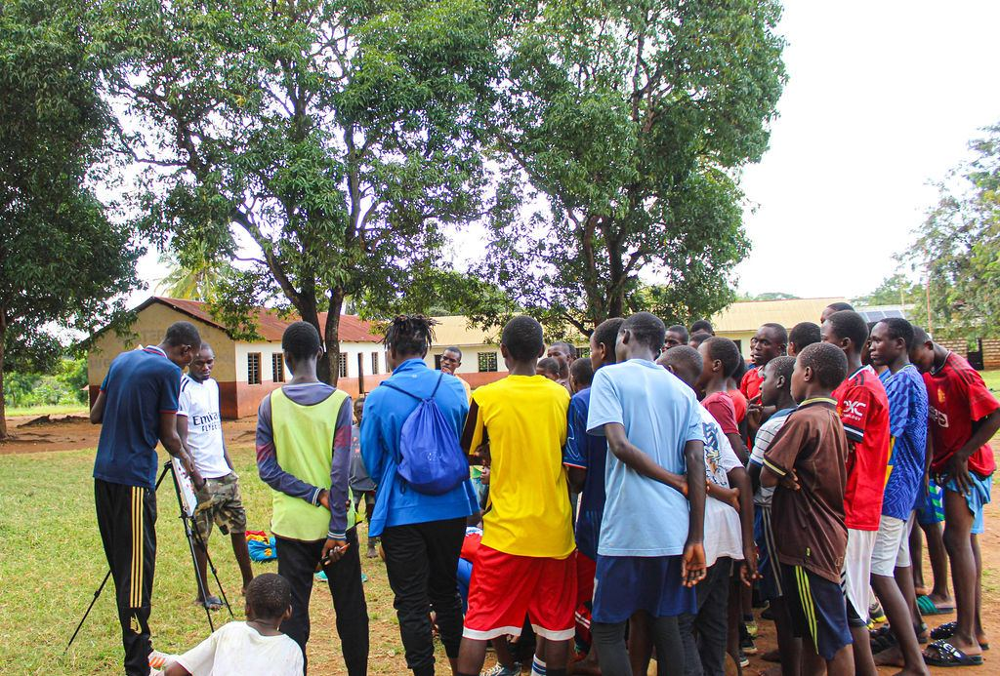
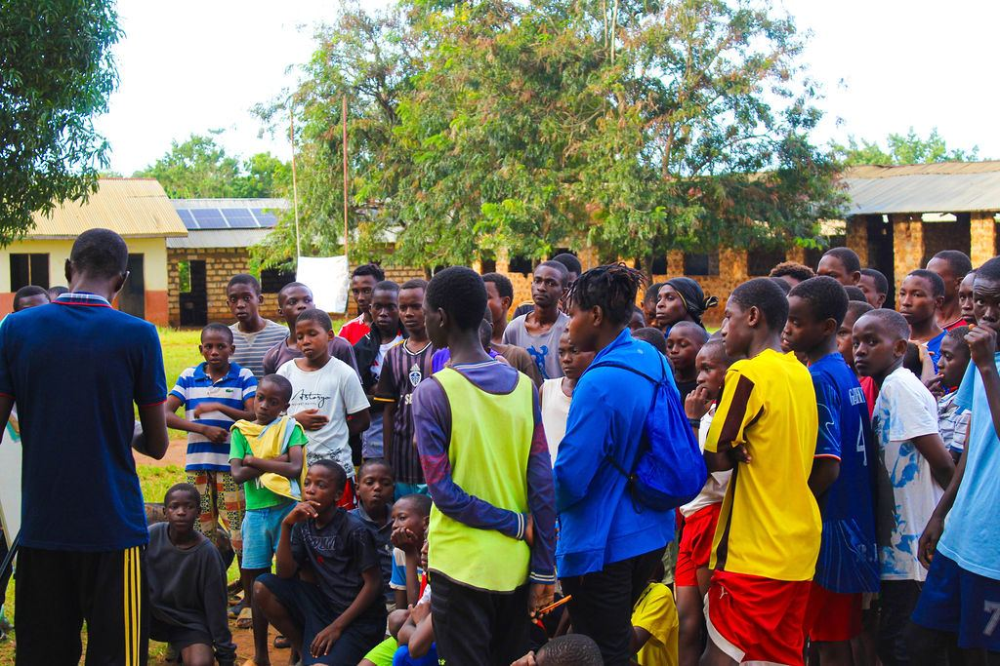
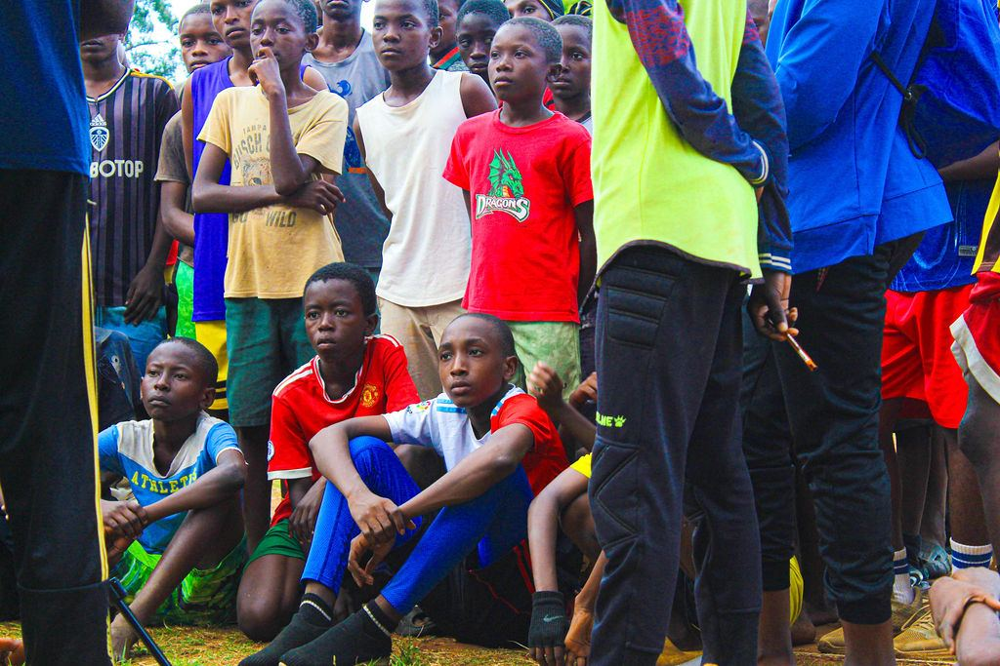
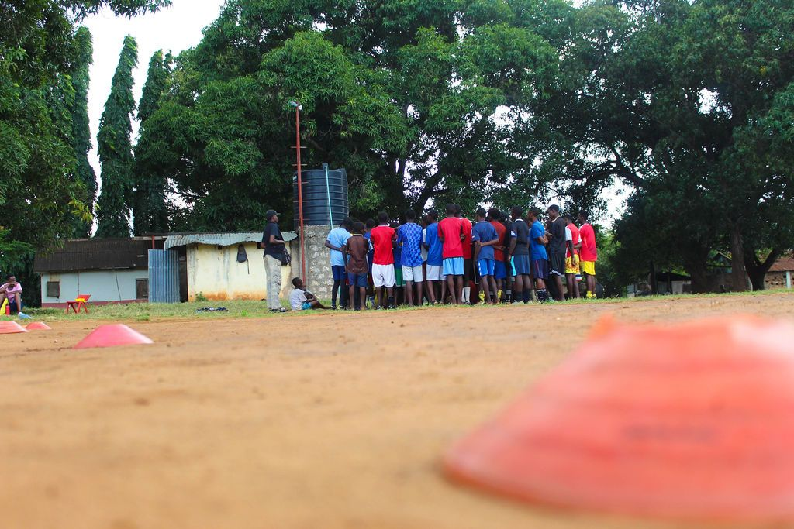

About the Institution
An institution, not just a team.
Our ambition is to build an institution that can serve young people and the wider community not just today, but for generations to come.

About · Est. 2020
We believe football has the power to give young people more than sporting ability. It can teach discipline, teamwork, resilience, responsibility, confidence and leadership — qualities that remain valuable long after a player leaves the pitch.
About the Institution
Our ambition is to build an institution that can serve young people and the wider community not just today, but for generations to come.
01 · Who We Are
Sporting Pearls Football Academy is a community-based football development institution established in 2020, dedicated to creating meaningful opportunities for young people through football. We believe football is more than a game — it is a powerful environment for developing talent, discipline, confidence, teamwork, leadership and character.
Our work is therefore bigger than football results. We are building an environment where young people can belong, develop, aspire and lead.
Our Purpose — Sporting Pearls exists to create meaningful opportunities for young people to:

More Than a Football Academy
Sporting Pearls is being built as a community institution, not simply as a collection of football teams. Our long-term ecosystem includes:
Player development, competition and pathways — structured football environments where young people can progress from foundation stages toward higher levels of the game.
Supporting young people to remain committed to learning, in the classroom as well as on the pitch.
Developing responsible and disciplined individuals through everything we do.
Preparing young people to take responsibility and influence others positively.
Developing the next generation of coaches and mentors.
Growing meaningful opportunities through Sporting Pearls Féminin — The Butterflies.
Using football to bring people together and create positive local impact.
Founded on a simple but powerful belief.
Every young person deserves an opportunity to discover and develop their potential.
Sporting Pearls was established in 2020 as a community-based football initiative in Kilifi County. What began as a football initiative is being developed into a broader community institution with systems covering football development, coaching, girls' and women's football, education and life skills, safeguarding, leadership, community engagement, partnerships, governance and institutional development.
Our programmes combine football training with character development, education, safeguarding, and community engagement to help players become responsible citizens as well as talented athletes. The academy also proudly includes Sporting Pearls Féminin — The Butterflies, reflecting our commitment to creating equal opportunities for girls and young women in football.
Our journey is therefore not only about building better football teams. It is about building better opportunities for young people.
Sporting Pearls was established as a community-based football initiative in Kilifi County — built on the founding idea of creating an environment where young people can develop football ability while building character.
Player groups, training routines and community relationships developed — football was the entry point, and the deeper ambition was youth development through sport.
Football activities expanded and the academy identity strengthened, with the academy's roots in the community shaping everything from sessions to structures.
Greater focus on systems, coaching, documentation and partnerships — turning a promising initiative into a structured institution.
Governance, safeguarding, Féminin and institutional systems come together in the 2026–2031 strategic window — from academy to institution.
A working timeline — milestones are updated from official Sporting Pearls records as they are verified.
Our full history presentation — covering the journey so far and the road ahead — will be published on this page.

02 · Vision & Mission
To become a leading community football development institution that transforms young people's lives through football, education, character and opportunity.
We want Sporting Pearls to become an institution that parents trust, players are proud to belong to, coaches can grow within, partners can confidently support and the community can call its own.
To identify, develop and empower young people through quality football coaching, education, character development, leadership and inclusive community programmes.
Everything we do is guided by our theme: Developing Talent. Building Character. Transforming Lives Through Football.
We provide structured football environments where players can progressively improve their technical, tactical, physical and psychological abilities.
We use football to develop discipline, respect, responsibility, teamwork, resilience and leadership.
We seek to create opportunities that positively influence players, families and communities both on and off the pitch.

03 · Core Values
Eight values shape our culture, our coaching and our decisions — on and off the pitch.
We continuously seek to improve our standards.
We act honestly, responsibly and transparently.
We treat everyone with dignity.
We believe meaningful growth requires patience and consistency.
The welfare and protection of young people comes first.
We encourage continuous learning among players, coaches and leaders.
We exist to serve and contribute to our community.
We seek meaningful opportunities for girls and boys to participate and develop.
04 · Our People
Sporting Pearls is built around a community of players, parents & guardians, coaches, volunteers, leaders, schools, community partners, sponsors and development partners. Everyone has a role in creating an environment where young people can thrive.
We believe sustainable institutions are built through people, systems and shared values — not through one individual.
05 · From Player to Leader
We want to create a culture where the development journey can continue beyond playing.
Every journey begins with a young person stepping onto the pitch.
Structured coaching turns enthusiasm into technical, tactical and physical growth.
Responsibility, communication and leading by example within the squad.
Guiding younger players and passing on what the academy gave them.
Coaching careers, further education and professional pathways beyond playing.
Giving back to the next generation — on and off the pitch.
The pathway will not be identical for everyone. But we want Sporting Pearls to provide opportunities for people to give back to the next generation.
06 · Our Long-Term Vision
"If Sporting Pearls is still thriving 100 years from now, what decisions should we make today?"
Our ambition is for today's players to eventually become tomorrow's coaches, mentors, administrators, leaders and supporters. That is how an academy becomes an institution.
07 · Community Commitment
Sporting Pearls is committed to building relationships with families, schools, football organizations, community institutions, sponsors and development partners. That principle guides our partnerships and our growth.
Our growth will be measured not only by the size of our teams, but by the quality of the systems and people we develop.
08 · Life at the Academy
A glimpse of everyday Sporting Pearls — the briefings, the huddles and the ground we call home, photographed across a training week in Mtwapa.










Photography from the academy's own training highlights — Mtwapa, Kilifi County.
We will work to ensure that every young person who passes through Sporting Pearls has an opportunity to leave better equipped for football and for life — developing their talent, strengthening their character, discovering their potential and building a better future.